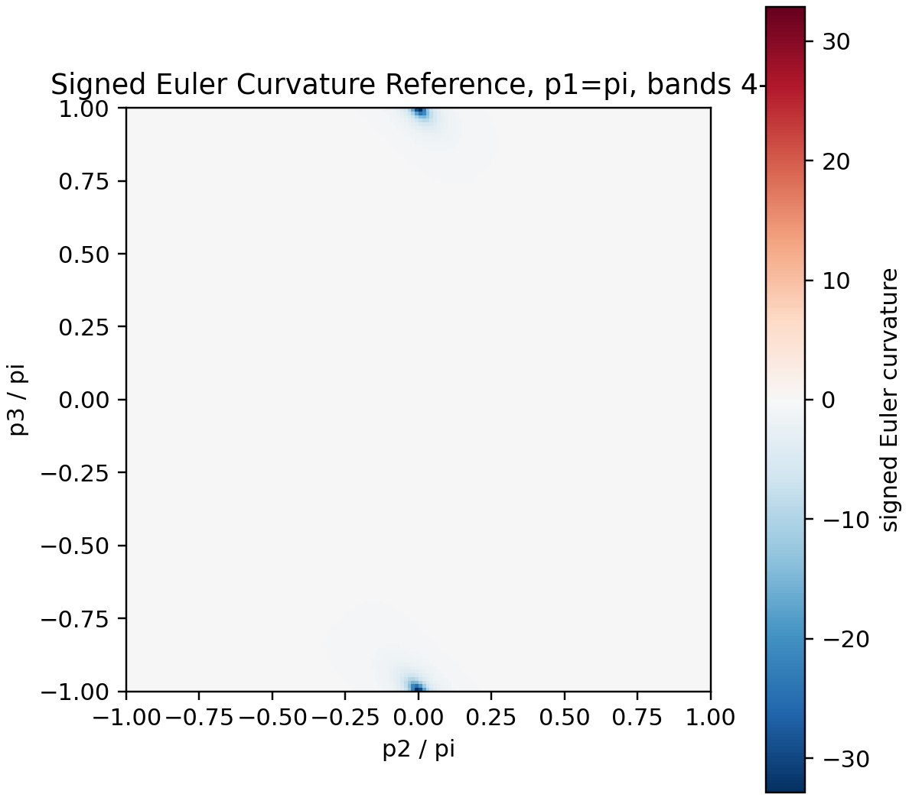
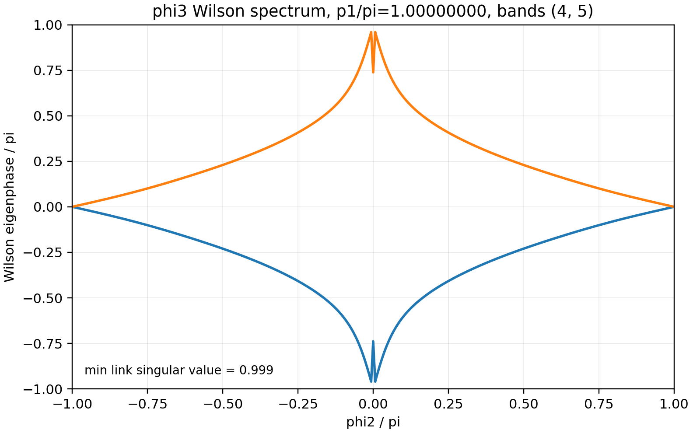
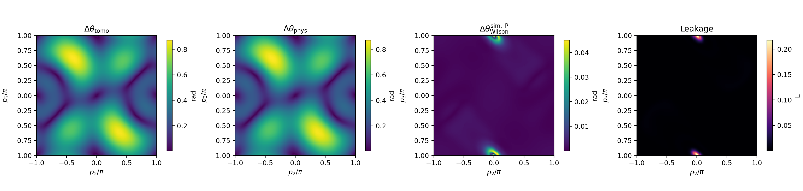

What topology appears in ABS phase space?
Wilson-loop spectra, Stiefel-Whitney/Euler diagnostics, Chern calculations, and nodal-line visualizations probe how superconducting phases organize the bound-state manifold.
Andreev bound states and topology
This work studies phase-controlled Andreev bound-state spectra in multiterminal superconducting junctions, with an emphasis on Wilson-loop observables, Euler curvature, nodal structures, and experimentally motivated tomography protocols.

The MTJJ folder contains scripts and reports that move between model Hamiltonians, numerical invariants, transport calculations, and measurement simulations.
Wilson-loop spectra, Stiefel-Whitney/Euler diagnostics, Chern calculations, and nodal-line visualizations probe how superconducting phases organize the bound-state manifold.
Tomography simulations compare finite-time phase-loop protocols against ideal Wilson plaquette references while tracking leakage, dynamical phases, and reconstruction error.
Kwant transport prototypes provide a route from toy models toward scattering, transconductance, and phase-sweep observables in multiterminal junction geometries.
These are placeholders drawn from current project outputs. Swap in your final public figures when ready.
Reference curvature map for a target ABS subspace in the C2zT-invariant phase plane.

Phase-dependent Wilson-loop spectrum used to diagnose eigenphase winding and splitting.

Full-plane comparison between simulated tomography reconstruction and Wilson reference targets.
A compact vocabulary for this page, useful for visitors who want the short technical map.
Phase-dependent Andreev matrices and positive-energy subspace tracking.
Gauge-stable holonomies, eigenphase splittings, and plaquette curvature references.
Noiseless and finite-shot protocols for reconstructing two-level loop evolution.
Prototype scattering calculations that connect phase-space structure to measurable response.